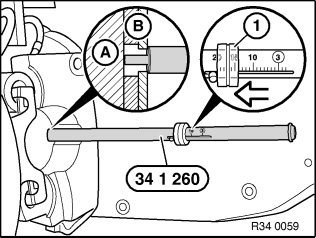

Brake Pad: Testing and Inspection
34 00 010 Checking thickness of brake padSpecial tools required:
Note:
The thickness of the outer brake pads can be determined without removing the wheels.
If necessary, move car until opening for brake pad wear indicator (brake pad) can be seen through rim styling.
Insert special tool 34 1 260 rim into opening for brake pad wear indicator.
Press special tool onto brake pad. Slide ring (1) in direction of arrow up to stop and read off measured value.

Note:
(A) Brake disc
(B) Brake pad with backplate
Safe limit for lining wear, front brake.
Safe limit for lining wear, rear brake.